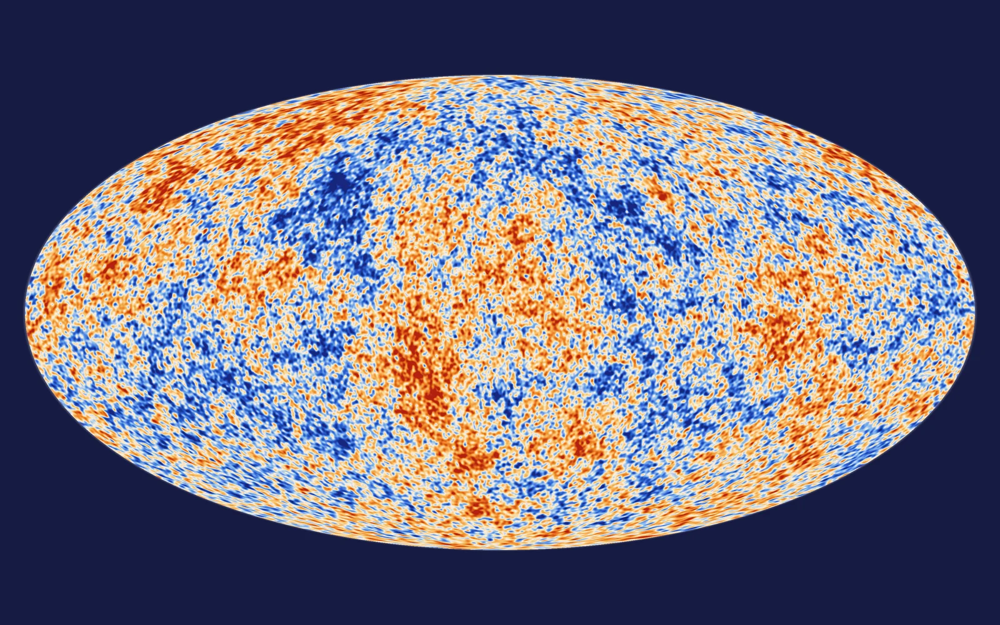
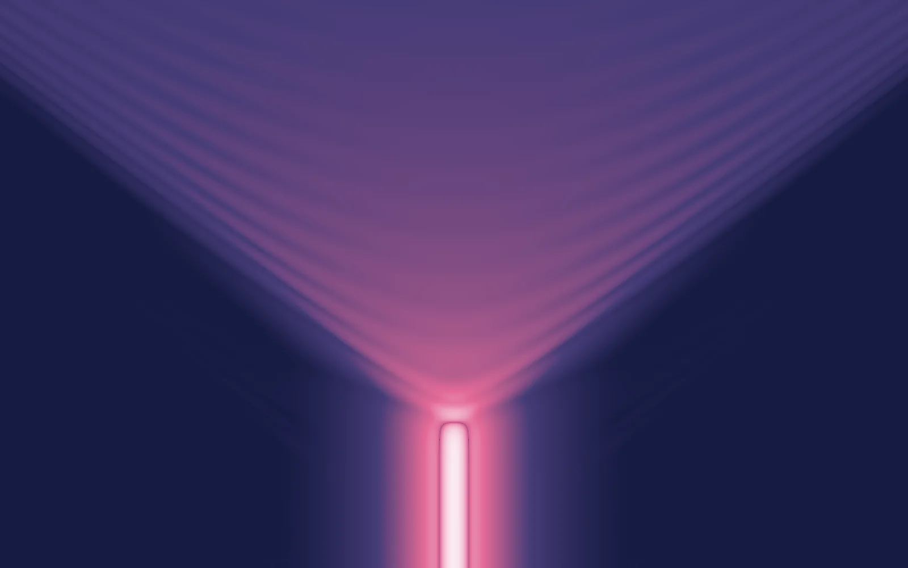
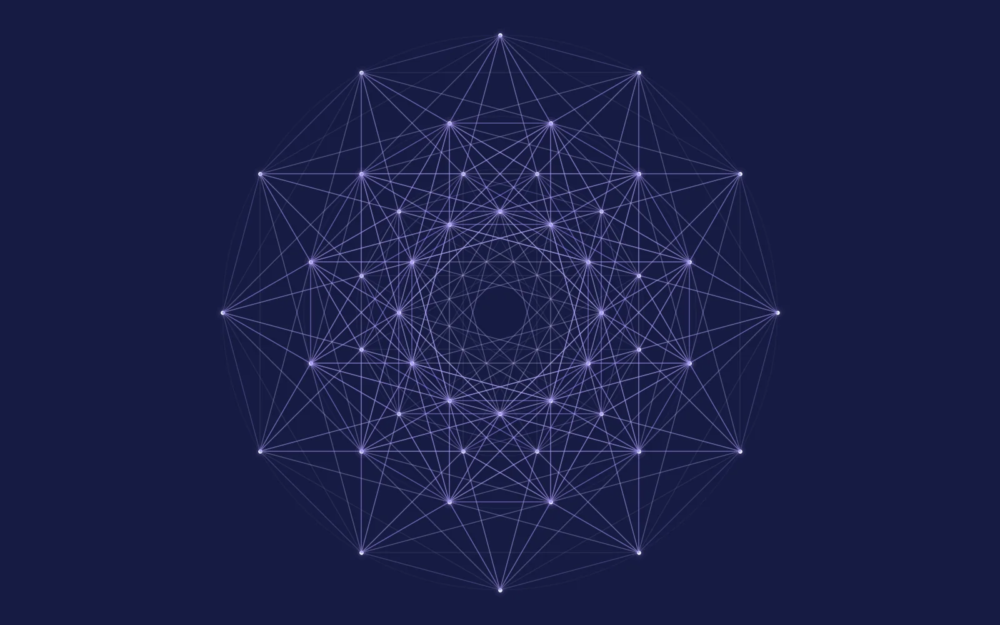

SarunasVerner
Theoretical physicist, KICP Fellow at the University of Chicago
I am a theoretical cosmologist and particle physicist. I study inflation, reheating, and the production of new particles in the early universe, including dark matter, axions, and relics of phase transitions or black hole evaporation. I test these models against the cosmic microwave background, gravitational waves, and astrophysical data. I also use machine learning to find structure in physical theories.
The inflaton rolls down a Starobinsky-type plateau. Each e-fold stretches space by a factor of e, and 60 of them by e60, about 1026. Behind it is the frozen imprint of quantum fluctuations, computed from the exact de Sitter mode functions.
More on reheating and my work on itFrom fundamental theory to observable physics
Each idea starts with a model of physics, follows its consequences through the early universe, and ends with predictions that observations can test.
-
Cosmology
Inflation, reheating & dark matter
Gravitational particle production, non-equilibrium dynamics, axions, and the origin of dark matter.
Explore this research
-
Particle physics
Particle physics & field theory
Physics beyond the Standard Model: models of dark matter, flavor physics, supersymmetry, supergravity, and electroweak sphalerons.
Explore this research
-
Observables
Gravitational waves & new probes
Signals of spectator fields and cosmic strings, and new searches for ultralight dark matter.
Explore this research
-
Methods
Machine learning for theoretical physics
Learning symmetry generators and Lie algebras, and exploring the structure of flavor models.
Explore this research
Selected work
The full record has 49 papers.
-
Early universe
Gravitational portals in the early Universe
Physical Review D 105, 075005 (2022), arXiv:2112.15214
Dark matter and radiation produced during reheating through graviton exchange alone, with a lower bound of about 1012 GeV on the maximum temperature.
-
Early universe
Axion kinetic misalignment and parametric resonance from inflation
JCAP 08, 036 (2020), arXiv:2004.00629
Axion dark matter with decay constants well below the usual 1011 GeV, when inflation leaves the Peccei–Quinn field at large values.
-
Particle physics
The electroweak sphaleron revisited, I and II
Physical Review D 112, 113009 and 113010 (2025), arXiv:2505.05607 and 2505.05608
The static sphaleron, its energy barrier, and its unstable mode, followed by its nonlinear decay, with a public numerical implementation.
-
Gravitational waves & probes
New method for the astrometric direct detection of ultralight dark matter
Physical Review Letters 134, 111003 (2025), arXiv:2406.03526
A proposal to search for ultralight dark matter through correlated changes in the apparent positions of distant sources.
-
Machine learning
Deep learning symmetries and their Lie groups, algebras, and subalgebras from first principles
Machine Learning: Science and Technology 4, 025027 (2023), arXiv:2301.05638
A method for learning continuous symmetry transformations and their algebraic structure from labeled data.
Calendar
Upcoming
-
Thermal Damping of a Spectator Scalar
Paris-Saclay Astroparticle Symposium
Workshop talk
-
Reheating after Inflation
National Autonomous University of Mexico (UNAM)
Colloquium
-
Reheating after Inflation
University of Chicago
KICP Chalk Talk
-
Multimessenger Probes of New Scales in Physics
Aspen Center for Physics
Workshop presentation
-
University of Minnesota
FTPI Seminar
-
University of Alabama
HEP Seminar
Let’s talk physics
I welcome conversations about early universe cosmology, particle physics, observational probes, and machine learning.